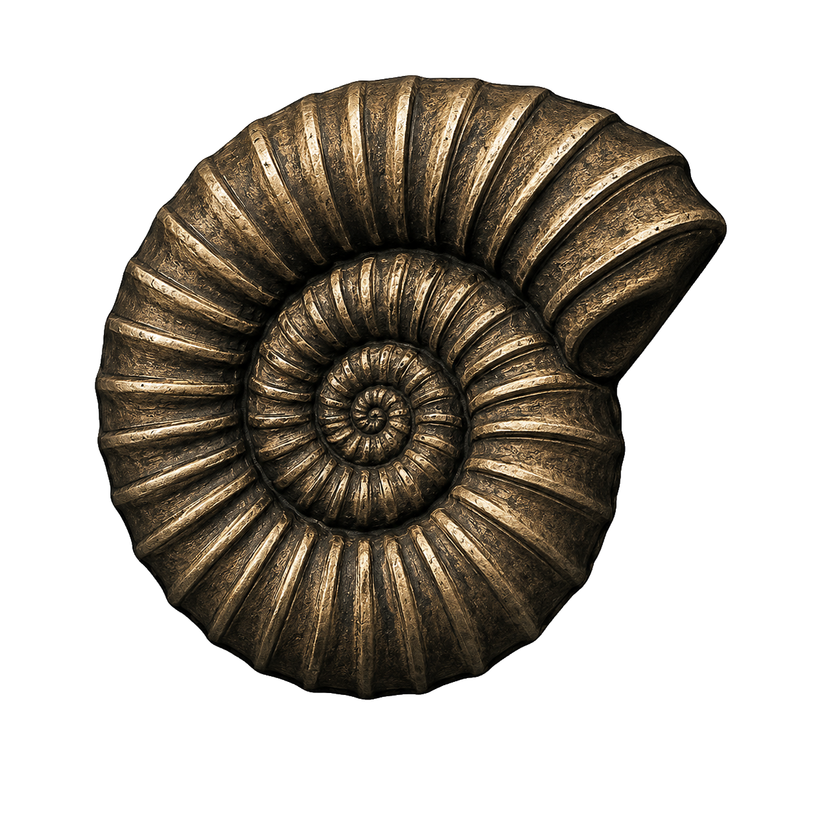

Экспонат № 001
Карманный навигатор из прошлой эпохи
Когда-то он уверенно водил автомобили по дорогам, а теперь ждёт вскрытия, изучения платы и возможного второго рождения.

Железки, редкости и странные находки, которые ещё рано сдавать в цветмет.
Когда-то он уверенно водил автомобили по дорогам, а теперь ждёт вскрытия, изучения платы и возможного второго рождения.
Микроконтроллер, реле, россыпь логики и ни одной понятной надписи. Назначение выясняется традиционным методом НИИ ЧАВО — прозвонкой и размышлением.
Сюда можно добавить фотографию, историю находки, схему, результаты ремонта и ссылку на отдельную страницу экспоната.
 Назад на главную
Назад на главную